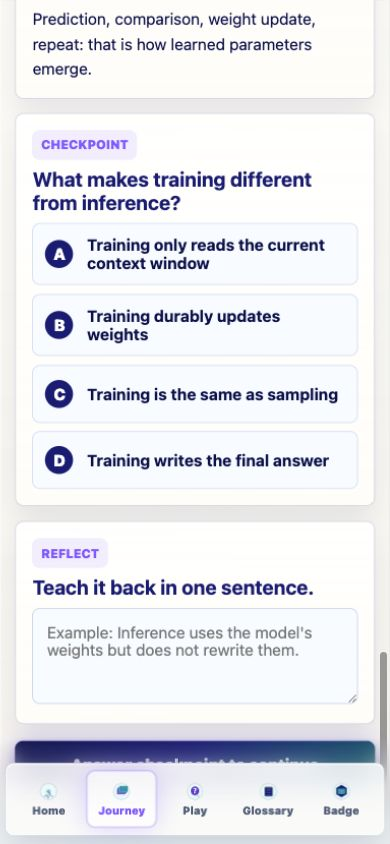
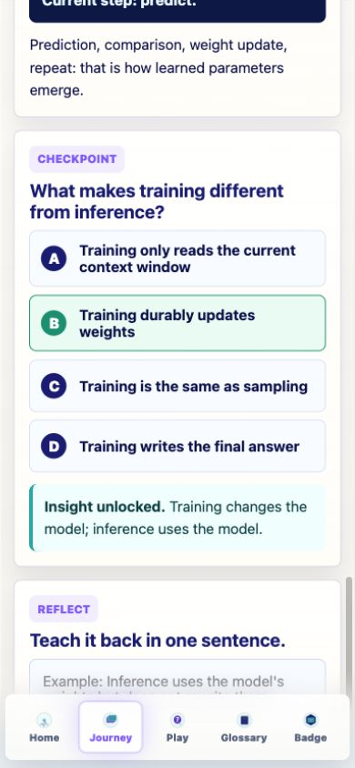
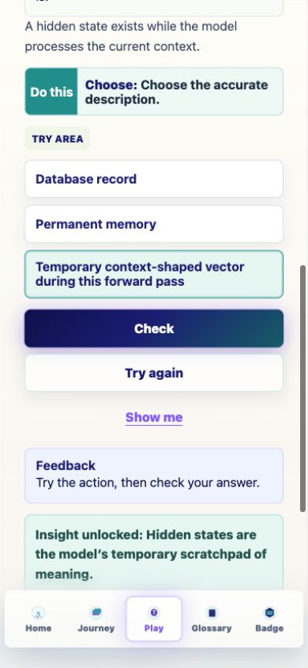
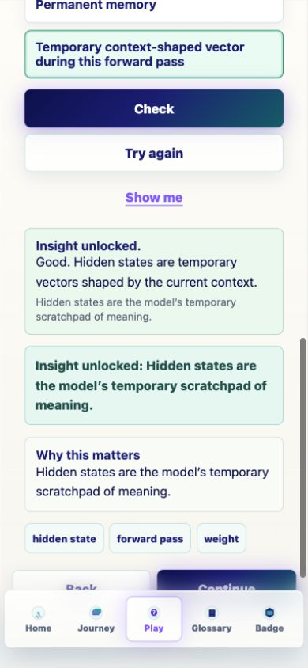
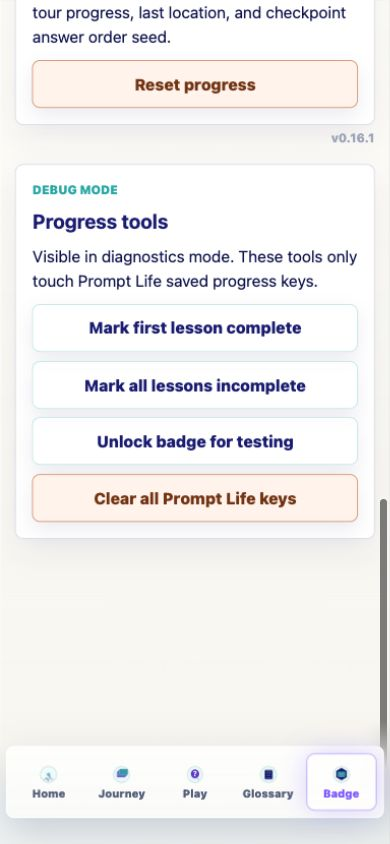

Prompt Life v0.16.1
Checkpoint Randomization + Assessment Integrity Report
Date: 2026-06-05. Scope: randomize answer order for Journey checkpoints and applicable single-choice exercises while preserving correctness, feedback, progress behavior, accessibility, and reviewability.
Response Summary
v0.16.1 breaks the correct-answer-first pattern. Journey checkpoints now render from stable normalized choices, and single-choice exercises use the same per-device deterministic shuffle. Correctness follows answer identity, not A/B/C/D position. Ordered, matched, sorted, token-label, toggle, connect-node, and multi-select exercises remain fixed when order or grouping supports the learning goal.
What Changed
- Bumped visible app version to
0.16.1. - Added
src/utils/choiceOrder.ts. - Randomized Journey checkpoints with stable per-question choice IDs.
- Randomized
tap-choiceandnext-token-pickexercises. - Added
npm run audit:answers. - Updated Badge reset copy to include the choice-order seed.
Randomization
- Seed key:
promptlife:v1:choiceOrderSeed. - Question identities:
lesson:{id}:checkpointandexercise:{id}. - Shuffle: deterministic Fisher-Yates.
- Fallback: deterministic seed if localStorage is unavailable.
- Reset clears the seed with the rest of Prompt Life progress.
Files Changed
package.jsonscripts/audit-answers.mjssrc/components/ExerciseSystem.tsxsrc/main.tsxsrc/styles/global.csssrc/utils/choiceOrder.tsdocs/REVIEW_NOTES.mddocs/curriculum/CHECKPOINT_RANDOMIZATION_AUDIT_V0_16_1.mddocs/curriculum/CHECKPOINT_RANDOMIZATION_V0_16_1.mddocs/curriculum/prompt-life-v0-16-1-checkpoint-randomization-report.htmldocs/curriculum/prompt-life-v0-16-1-checkpoint-randomization-report.pdfdocs/screenshots/v0-16-1-*.png
Audit Result
- Total audited surfaces: 61.
- Randomized surfaces: 45.
- Fixed-order exclusions: 16.
- First correct answer positions after audit-seed shuffle: position 1 = 9, position 2 = 19, position 3 = 9, position 4 = 8.
QA Result
npm run typecheck: passed.npm run build: passed with the existing Vite large-chunk warning.npm run build:pages: passed with the existing Vite large-chunk warning.npm run audit:answers: passed.- Browser QA at 390px passed for Learn, Preview, Review, Prompt Run single-choice exercise behavior, and Badge reset/version copy.
Known issue: Vite still reports the existing single JavaScript chunk above 500 kB after minification.
Next Three Recommended Steps
- Add a regression test around the shuffle helper.
- Add an optional internal answer-order review screen if future reviewers want visual inspection.
- Revisit multi-select randomization only if user testing shows authored grouping creates bias.
Screenshot: Training Shuffled Checkpoint
Correct answer appears in B, with A/B/C/D assigned after shuffle.

Screenshot: Training Correct Feedback
Correct selection preserves Insight unlocked feedback and unlocks the next action.

Screenshot: Prompt Run Exercise Shuffled
ExerciseShell single-choice items are shuffled while item identity remains stable.

Screenshot: Prompt Run Exercise Feedback
Correct exercise feedback enables Continue without relying on option position.

Screenshot: Badge Reset Copy
Badge page shows v0.16.1 and documents that reset clears the choice-order seed.
